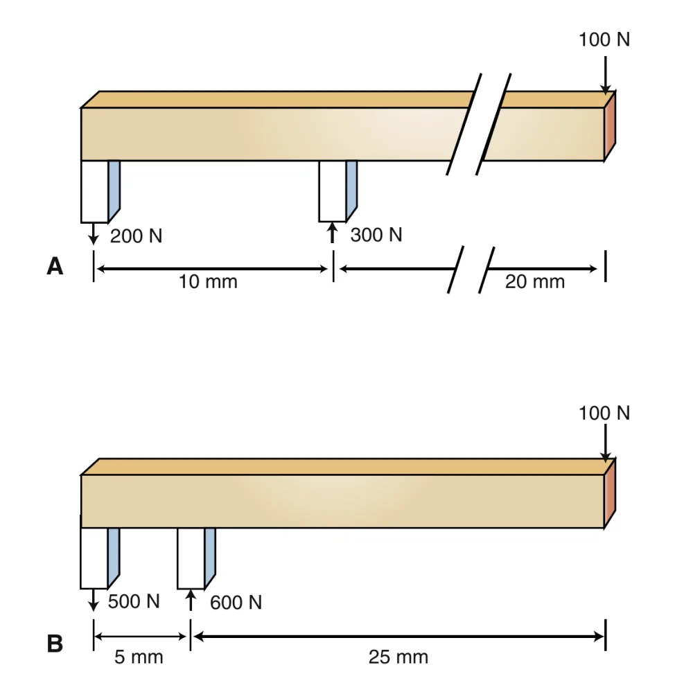
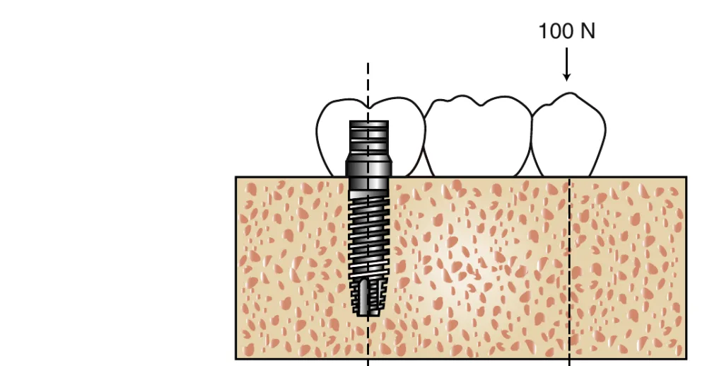

نسخه استخراجشده؛ ترجمه یا تأیید علمی انجام نشده است. وضعیت: captured
این درس یک محاسبه دارد که اگر آن را بفهمی، تصمیمهای کانتیلور برایت دیگر شهودی نخواهد بود بلکه قابل حساب میشود.
صورت مسئله این است: «اگر دو ایمپلنت با فاصلهی ۱۰ میلیمتر به هم اسپلینت شوند، و یک کانتیلور دیستالی ۲۰ میلیمتری با بار ۱۰۰ نیوتن طراحی شود، نیروهای زیر حاصل میشوند.»
و پاسخ دقیق را کپشن همان شکل میدهد: «یک بار ۱۰۰ نیوتنی با نیروی ۲۰۰ نیوتنی توسط ایمپلنت مزیالی مقاومت میشود، و ایمپلنت دیستالی بهعنوان تکیهگاه با بار ۳۰۰ نیوتن عمل میکند.»
سه چیز را از این مثال بردار:
۱. نیرو تقسیم نمیشود؛ تشدید میشود. بار ۱۰۰ نیوتنی به ۲۰۰ و ۳۰۰ نیوتن تبدیل شد — یعنی دو و سه برابر خودش.
۲. ایمپلنت مزیالی کشیده میشود. و از درس اول میدانی که کشش و برش، رابط استخوانـایمپلنت را از هم میکشند. یعنی ایمپلنت دورتر از کانتیلور، بدترین نوع بار را میگیرد.
۳. ایمپلنت دیستالی نقش تکیهگاه (fulcrum) دارد. بار فشاری بیشتری میگیرد ولی نوعش مطلوبتر است.
و نتیجه: «چون استخوان و پیچها تحت اثر نیروهای کششی ضعیفترند، هر دو ایمپلنت برای عوارض در معرض خطر بیشتری قرار میگیرند.»
و حالا اثر فاصلهی بین ایمپلنتها — که مهمترین درس این مثال است:
حالا محل و مقدار بار را ثابت نگه دار و فقط ایمپلنت دیستالی را ۵ میلیمتر جلوتر بگذار؛ فاصلهی دو ایمپلنت ۵ میلیمتر و کانتیلور ۲۵ میلیمتر میشود: «اگر ایمپلنتها ۵ میلیمتر فاصله داشته باشند، آنگاه ایمپلنت قدامی باید در برابر نیروی ۵۰۰ نیوتنی مقاومت کند و ایمپلنت تکیهگاهی دیستالی نیروی ۶۰۰ نیوتنی دریافت میکند.»
مقایسه کن:
• فاصلهی ۱۰ میلیمتر و کانتیلور ۲۰ میلیمتر ← ۲۰۰ و ۳۰۰ نیوتن
• فاصلهی ۵ میلیمتر و کانتیلور ۲۵ میلیمتر ← ۵۰۰ و ۶۰۰ نیوتن
و به همین دلیل است که: «بنابراین نیروی کششی روی ایمپلنت قدامی ۲٫۵ برابر افزایش مییابد، در حالی که نیروی فشاری دو برابر میشود.»
به این دقت کن که ۲٫۵ و ۲ ضرایب مقایسهی دو حالتاند، نه ضرایب خودِ بار. یک جابهجایی ۵ میلیمتری ایمپلنت دیستالی، نیروی کششی را دوونیم برابر کرد — بدون آنکه بار اکلوزالی یا محل آن تغییر کرده باشد. حساب سادهای پشت آن است: کشش ایمپلنت مزیالی = بار × طول کانتیلور ÷ فاصلهی ایمپلنتها (۱۰۰×۲۰÷۱۰ = ۲۰۰ و ۱۰۰×۲۵÷۵ = ۵۰۰)؛ نیروی تکیهگاه هم همین عدد بهاضافهی خود بار است.
یعنی فاصلهی میان ایمپلنتهای تکیهگاهی، خودش یک متغیر طراحی است — نه چیزی که تصادفی تعیین شود. هرچه این فاصله بیشتر باشد، نیروهای حاصل کمتر میشوند.
و همین ما را به مفهوم A-P spread میرساند: فاصلهی قدامیـخلفی میان دورترین ایمپلنتهای اسپلینتشده.
و قاعدهی عددی که باید بدانی:
«تجربههای بالینی نشان میدهند که کانتیلور دیستالی نباید بیش از ۲٫۵ برابر A-P spread امتداد یابد، تحت شرایط ایدهآل (برای نمونه نبود پارافانکشن یا پنج ایمپلنت دیویژن A).»
به قید «شرایط ایدهآل» دقت کن — و دو نمونهاش اینهاست: نبود پارافانکشن و پنج ایمپلنت دیویژن A. اگر این شرایط برقرار نباشد، ضریب ۲٫۵ سقف نیست؛ عددی است که باید از آن پایینتر بروی. و در براکسیسم شدید، هیچ کانتیلوری ساخته نمیشود — هر عامل دیگری هم که مساعد باشد.

حالا یک متغیر که هیچکس آن را انتخاب نمیکند ولی همهچیز را تغییر میدهد: شکل قوس بیمار.
قوس مربعی: «یک شکل قوس مربعی، A-P spread کوچکتری میان ایمپلنتهای اسپلینتشده دارد و باید کانتیلورهای با طول کوتاهتر داشته باشد.»
قوس مخروطی (tapered): «یک شکل قوس مخروطی بیشترین فاصله را میان ایمپلنتهای قدامی و خلفی دارد و ممکن است طولانیترین طراحی کانتیلور را داشته باشد.»
منطق هندسیاش ساده است: در قوس مربعی، ایمپلنتهای قدامی تقریباً همراستا با خلفیها هستند، پس فاصلهی قدامیـخلفی کم است. در قوس مخروطی، ایمپلنتهای قدامی بسیار جلوتر میافتند و A-P spread بزرگ میشود.
و پیامد بالینی این است: دو بیمار با تعداد ایمپلنت یکسان و کیفیت استخوان یکسان، میتوانند طول کانتیلور مجاز کاملاً متفاوتی داشته باشند — فقط بهدلیل شکل قوسشان.
پس شکل قوس باید در معاینهی اولیه ثبت شود، چون یک متغیر تعیینکنندهی طرح است نه یک توصیف ظاهری.
و تفاوت ماگزیلا و مندیبل: ماگزیلا استخوان کمتراکمتری از مندیبل دارد و پروتزش بیشتر کانتیلور قدامی دارد.
«در نتیجه، ایمپلنتهای دیستالیتر ممکن است در ماگزیلا لازم باشند تا A-P spread برای کانتیلور قدامی یا خلفی افزایش یابد، و ممکن است افزایش سینوس برای امکان جایگذاری خلفی ایمپلنت لازم شود.»
این یک زنجیرهی تصمیم است که باید کامل ببینی:
نیاز پروتزی به کانتیلور ← نیاز به A-P spread بزرگتر ← نیاز به ایمپلنت دیستالیتر ← نیاز به لیفت سینوس.
یعنی یک تصمیم پروتزی، به یک جراحی پیوند میرسد. و این نمونهی روشنی است از اینکه چرا طرح پروتزی باید پیش از طرح جراحی نوشته شود، نه پس از آن.
و پیچیدگی واقعی کانتیلور: یادت باشد «پروتزهای کانتیلور متصل به ایمپلنتهای اسپلینتشده به یک واکنش بار پیچیده میانجامند.»
و مهمتر: «مقدار استرس اعمالشده به سیستم، طول این کانتیلور دیستالی را تعیین میکند.»
پس ۲٫۵ یک سقف مطلق نیست؛ یک سقف مشروط است. متغیر واقعی مقدار استرس کل سیستم است — و پارافانکشن، کیفیت استخوان، تعداد ایمپلنت و ارتفاع تاج همگی در آن سهم دارند.
در یونیت بعدی میبینی این متغیرها چگونه در یک چارچوب واحد — قضیهی درمان استرس — جمع میشوند.

نوع سؤال: ساخت کلمه · 10 خانه
حروف منبع: ر · ن · ک · ف · ن · ا · ا · پ · ش · ا